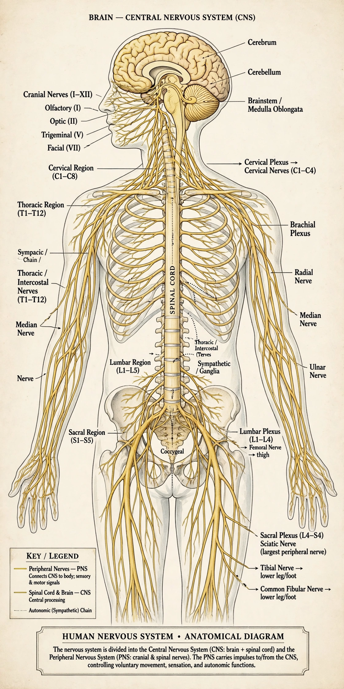

From Wikipedia, the free encyclopedia
| Peripheral nervous system | |
|---|---|
| Components | Cranial nerves, spinal nerves, ganglia, enteric system |
| Divisions | Somatic, autonomic (sympathetic, parasympathetic, enteric) |
| Connected to | Central nervous system |
| Function | Relays sensory and motor signals between CNS and body |
The peripheral nervous system (PNS) is one of the two components of the nervous system, consisting of the nerves and ganglia outside the brain and spinal cord (the central nervous system). Its main function is to connect the CNS to the limbs and organs, serving as a relay for sensory information flowing in and motor commands flowing out. Unlike the CNS, the PNS is not protected by bone or the blood–brain barrier, leaving it exposed to toxins and mechanical injury — but its axons, unlike those of the CNS, can regenerate after damage.
The PNS comprises the 12 pairs of cranial nerves (some of which are arguably CNS tracts) and the 31 pairs of spinal nerves, together with their roots, plexuses, and branches, plus sensory and autonomic ganglia where many peripheral neuron cell bodies reside. Schwann cells insulate peripheral axons with myelin.
The somatic division carries conscious sensation from skin, muscles, and joints, and voluntary motor commands to skeletal muscle, including the reflex arcs of the spinal cord.
The autonomic division regulates involuntary functions — heart rate, digestion, pupil size, sweating. Its sympathetic branch mobilises the body for activity ("fight or flight"), the parasympathetic branch supports rest and digestion, and the enteric nervous system, a large network embedded in the gut wall, coordinates digestion semi-autonomously.
Peripheral neuropathies — from diabetes, alcohol, chemotherapy, or autoimmune attack (as in Guillain–Barré syndrome) — damage peripheral nerves, causing pain, numbness, and weakness. Damage is typically length-dependent, beginning in the feet and hands in a "stocking-glove" pattern.
Central nervous system · Nerve · Autonomic nervous system · Peripheral neuropathy
